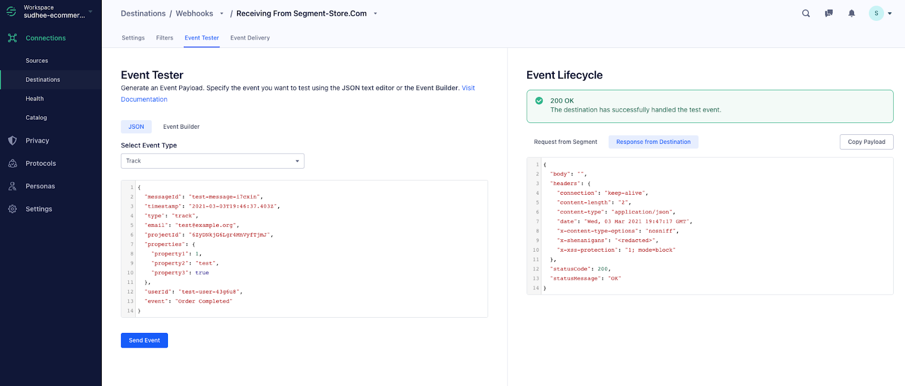

Welcome!
Your live application with Twilio is ready to use!
Welcome!
Your live application with Twilio is ready to use!
Get started with your application
Now that your code is deployed, here are the last steps you need to do to finish your app.
This app sends an SMS to your number when your Segment-enabled website generates a specific tracking event.
- Login to your Segment App (if you don't have an account, sign-up for a free developer account )
- Click the "Add Destination" button on your Workspace Overview page
- Search for "Webhooks" in your Catalog and configure the Webhook destination with your source
-
Input this webhook URL into your destination settings and click Save:

- Finally, activate the new destination by flipping its toggle switch to ON
-
When a Segment
trackevent occurs and its name matches the one this application was configured to look for, you should receive a text. To generate atrackevent for testing, see the Troubleshooting section below.
Troubleshooting
-
From your Segment Workspace, use the Event Tester to verify that your
webhook is functioning correctly. If you send a
trackevent with the same name as the one this application is configured to look for, you should receive a text. 